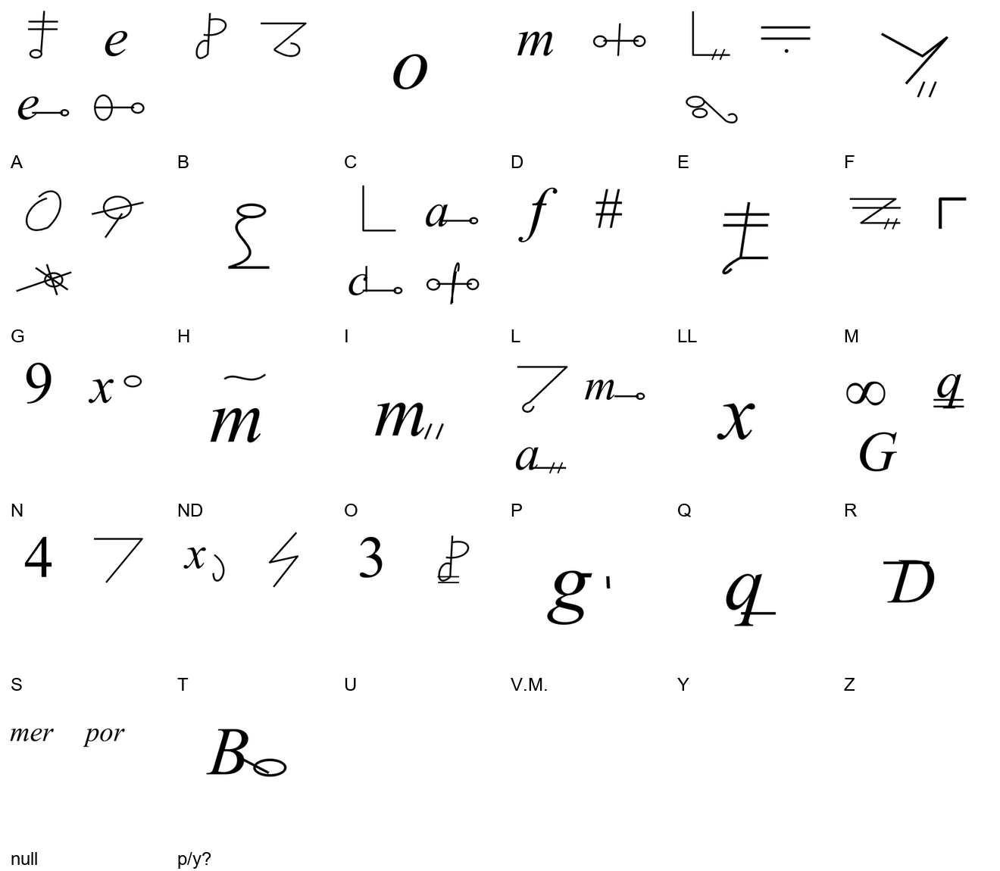
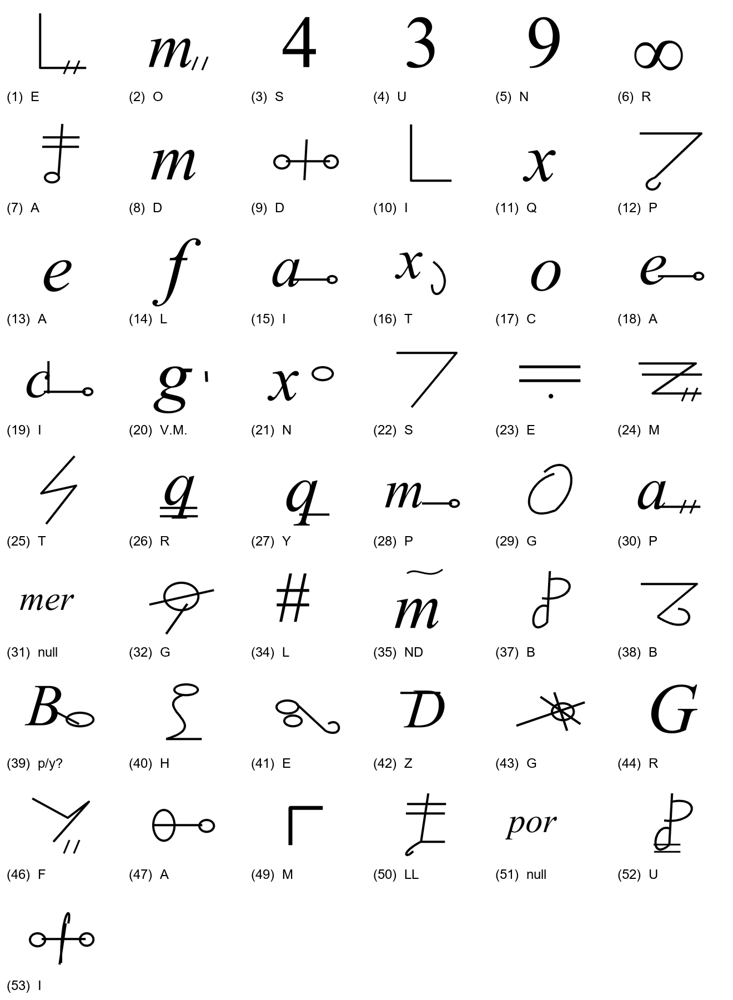

At a glanceKey recovered from ciphertext-only
- The letter
- Rodrigo Niño to Emperor Charles V (Charles I of Spain), Naples, 19 March 1522.
- Where
- Biblioteca Nacional de España, MSS/20213/27, f. 1v; DECODE R1182, catalogue item 151. One eight-line cipher block in a mostly clear Spanish letter.
- The cipher
- 260 elements; 49 observed key entries. Up to four signs per vowel and three per consonant. Two null types occur three times.
- Method
- Transcribed with CTTS (CrypTool Transcriber and Solver); initial key recovered with CTTS built-in cryptanalysis. The key and translation were refined by GPT 6.1 Sol and Anthropic Opus 5.5.
- Credit
- Contributed by George Lasry. Solved by George Lasry. Related prior work by Olga Kolosova and Satoshi Tomokiyo is acknowledged below; no first-publication claim.
- What it says
- A plea to fund the rear-guard from Spain: the soldiers have no bread and the towns cannot bear the harm being done to them.
- Still open
- Two occurrences of sign (39), apparently p in one place and y in another. LL and ND each rest on one contextual occurrence.
01 The document
The date and correspondents agree in the manuscript description, the DECODE metadata and the BNE record indexed by the Biblioteca Digital del Patrimonio Iberoamericano. The Royal Academy of History’s Salazar y Castro inventory identifies the same letter, now BNE MSS/20213(27), as an original of two folios about the death of the viceroy and the choice of his successor.
The clear part concerns the death of Ramón de Cardona, interim government in Naples, the need for a new viceroy, and military and financial business. The cipher block adds an urgent warning about the unpaid rear-guard and the damage suffered by the towns. The contribution transcribes and deciphers this entire block; it does not claim a fresh edition of all the clear prose.
View the manuscript on DECODE (f. 1v is the left page of the second attachment). DECODE’s rights notice requires archive permission to publish the photographs, so they are not redistributed here. The figures below are newly drawn symbol equivalents.
02 The recovered key

The 49 entries comprise 44 letter-sign classes (including the ambiguous p/y class), LL and ND, the address V.M., and two null groups. The maxima among settled letter values are four signs for a and i, and three for g, p and r. The apparent Arabic digits are sign shapes, not numerical code values. Bars and ticks distinguish several classes.
The null groups mer (twice) and por (once) are included as three cipher elements, not counted letter by letter. The paragraph mark and two punctuation marks are excluded. Seven duplicate detection boxes were removed. The earlier eye transcription split modifiers and gave 336 signs; it is retained as a record of the unsuccessful September attempt, not mixed with this inventory.
255 of 257 non-null occurrences have an unambiguous assigned value (99.2% assignment coverage). This measures key application, not independent accuracy. Two occurrences of (39) remain unresolved; LL and ND are contextual one-occurrence readings. The decoder and token-aligned output let a reader inspect the distinction.

03 Decryption and translation
The following is the whole eight-line cipher block. Word division, accents, ñ and u/v are normalized in the edited Spanish; the literal stream below preserves the key output. V.M. is rendered “Your Majesty” for the established recipient. The proposed opening connective in line 7 remains uncertain.
Edited Spanish
España se remedie a la paga desta retaguarda,
porque ni ellos tienen pan de que bivir ni los
pueblos pueden sufrir el daño que se les
haze y sin duda crea V.M. que si esto no se remedia
y presto, que abrá algún grande ynconviniente.
Y? este no puede ser que no sea en grande des-
servicio de V.M.
English translation
provision be made from Spain for the pay of this rear-guard,
because neither do they have bread to live on, nor can the
towns bear the harm that is being done to them.
And Your Majesty should be assured that, if this is not remedied,
and quickly, there will be some serious difficulty.
[And?] this cannot but be a great dis-
service to Your Majesty.
Literal key output
poramordediossuplicoav.m.mandequede espanaseremediealapagadestaretaguarda porqueniellostienen?andequebiuirnilos pueblospuedensufrireldanoqueseles hazeysindudacreav.m.quesiestonoseremedia yprestoqueabraalgungrandeynconuiniente ?estenopuedeserquenoseaengrandedes seruiciodev.m.
Nulls are omitted; (39) is ? at both places. No silent contextual repair is included in this stream. The edited bivir and servicio use v for literal u; pan de is obtained from the contextual ND group. The spelling abrá is retained.
04 Recovery and open signs
Lasry transcribed the block with CTTS and recovered an initial homophonic key using its built-in cryptanalysis. GPT 6.1 Sol and Anthropic Opus 5.5 refined the key and translation. The source-position pass removed duplicated boxes, separated a two-tick u sign from a similar b, and separated the i in Dios from a d-shaped neighbour. No surviving alphabet key or literal plaintext was applied.
The earlier repository attempt of 21 September 2026 used a different, noisy eye transcription and did not converge. That failed attempt and its scripts are preserved in the target folder. It is not the source of Lasry’s recovered initial key.
- (39), grade M: the first occurrence would give p in pan; the second suggests y before este. A subtle graphical distinction or a transcription error remains possible. Polyphony has not been proved, so this class is not counted as a settled p or y.
- (35)=ND and (50)=LL, grade I: nasal-marked d gives pan de, and the double-barred sign gives ellos. Both occur only once; the contextual values remain explicit in key.tsv.
- Nulls, grade I: the literal initial mer and final mer por agree with the published null-group description. Unsupported expansions “Mas” and “nuestro señor” were removed.
The complete token sequence, key, raw decryption, edited reading and translation are supplied separately. The statistical validation reports a language-model control, not proof of every sign or the translation; its result is in the profile.
05 Prior published work
Tomokiyo’s Cryptiana describes Olga Kolosova’s reconstruction of a 1522 Rodrigo Niño cipher (Cifra 15), from three Spanish letters, with syllable-shaped null groups including mer and por. The actual published alphabet has not been compared here. The September notes called it the same system, but exact key identity and whether this particular letter was among her three remain unconfirmed.
Lasry’s CTTS alphabet recovery and the refined reading preceded this submission’s consultation of those notes. The published description was used to correct the null interpretation during PR preparation. This contribution acknowledges earlier scholarship and makes no claim to the first publication of the system or this letter.
06 Sources and files
- DECODE R1182: metadata and manuscript images, Biblioteca Nacional de España, MSS/20213/27.
- Real Academia de la Historia, Salazar y Castro inventory, Apéndice B, no. 90: letter of 19 March 1522; removed original now in BNE MSS/20213(27).
- Satoshi Tomokiyo, Cryptiana: Spanish ciphers, Ko.15, citing Olga Kolosova, El lenguaje secreto de la diplomacia de Carlos V (1521–1527), 2017, pp. 452–459; thesis record. Related published reconstruction; exact letter coverage unconfirmed.
- Ciphertext transcription · Key with status · Decryption · Translation.
Reproducible counts, literal decoder, CTTS files and the earlier failed attempt: targets/nino1522/.